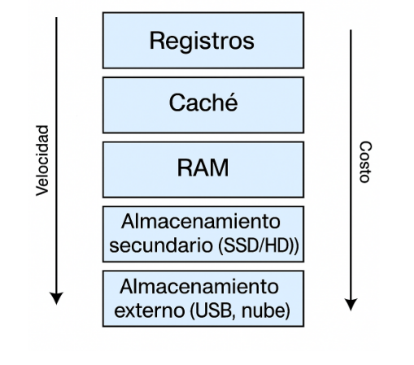

Arquitectura de maquinas - Contenido y material del curso
La jerarquia de memoria se refiere a la organizacion de los diferentes tipos de memoria en niveles, segun su velocidad, tamano y costo. Desde el nivel mas rapido y costoso hasta el mas lento y barato, la jerarquia es asi:
Esto es una organizacion en niveles que busca equilibrar velocidad, costo y capacidad.
Las memorias mas rapidas como los registros y la cache se encuentran cerca del procesador y son pequenas y costosas, mientras que memorias mas lentas como la RAM y el disco duro son mas grandes y economicas. Esta estructura permite que el procesador acceda primero a la memoria mas rapida
y solo recurra a niveles inferiores si es necesario, mejorando asi el rendimiento del sistema.
Gracias a la jerarquia, se puede lograr un sistema eficiente sin necesidad de usar un solo tipo de memoria para todo.
Por que existe jerarquia en la memoria?
La jerarquia de memoria existe para equilibrar tres factores fundamentales: la velocidad, el costo y el tamano. En cuanto a la velocidad, el procesador necesita acceder
a los datos lo mas rapido posible, por lo que las memorias que se encuentran mas cerca de el, como los registros o la cache, deben ser extremadamente rapidas. Sin embargo, estas memorias son tambien las mas costosas, lo que hace inviable utilizarlas como unica fuente de almacenamiento. Por esa razon, el sistema recurre a memorias de menor costo pero tambien mas lentas,
como la RAM o los discos duros. Ademas, existe una relacion directa entre la velocidad y el tamano: cuanto mas rapida es una memoria, menor es su capacidad.
Esta es la razon por la cual la jerarquia combina distintos tipos de memoria, permitiendo un sistema eficiente, rapido y economicamente viable.
La memoria es crucial para el rendimiento y funcionalidad del sistema. Sin memoria:
-El procesador no podria guardar ni recuperar datos para operar.
-No podriamos abrir multiples aplicaciones a la vez.
-No se podrian ejecutar programas grandes o complejos.
La cantidad y tipo de memoria afecta directamente la velocidad del sistema. Por ejemplo, tener mas RAM permite que el sistema cargue mas programas simultaneamente sin usar el disco duro, lo que reduce el tiempo de espera.
En sistemas embebidos, donde los recursos son limitados, el manejo eficiente de memoria es vital para que el sistema funcione correctamente con el menor consumo de energia posible.